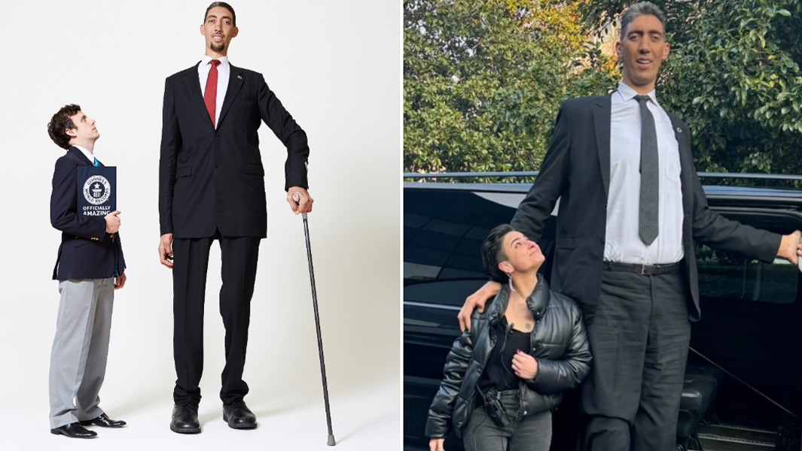

Sultan Kösen (born 10 December 1982) is a Turkish farmer who holds the Guinness World Record for tallest living male at 251 cm (8 ft 2.82 in).
Kösen's growth resulted from the conditions gigantism and acromegaly, caused by a tumour affecting his pituitary gland. Due to his condition, he uses crutches to walk.
Competes in the second place the legendary Robert Wadlow (USA) was born 100 years ago today.
He measured 8 ft 11.1 in (2.72 m) tall when last measured on the 27 June 1940.

Gheorghe Mureșan born 14 February 1971, known as The Giant is a Romanian American former professional basketball player.
At 7 feet 7 inches (2.31 m), he is one of the two tallest players to have played in the NBA.

LeBron entered the NBA measuring 6-foot-8 back when he was 18.
Now in his late thirties, the future Hall of Famer will go down in history as one of the best, if not the best, basketball players of all time.

The world's shortest verified man is Chandra Bahadur Dangi, while for women Pauline Musters holds the record.
At 54.6 cm (21.5 in), Nepalese-born Chandra Bahadur Dangi was, at the time of his death in 2015, the world's shortest person ever verified.

(born 16 December 1993)[1] is an Indian actress notable for being the world's shortest living woman according to the Guinness World Records.
She was officially declared the world's shortest living woman by Guinness World Records with a height of 62.8 centimetres (2 ft) Her restricted height is due to a genetic disorder called primordial dwarfism.